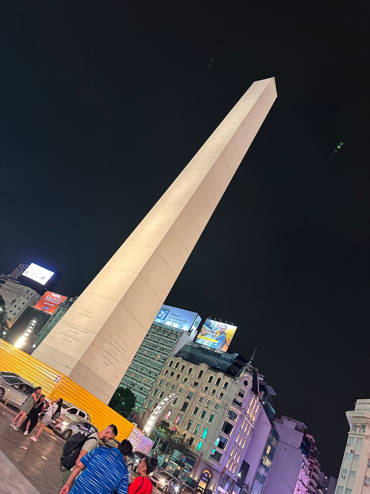

Hola, soy Emanuel Monella, tengo 34 años y soy de Rosario.
Me gusta mucho la programaciòn y la tecnologìa.
Trabajo de mecànico y mis tiempos libres disfruto de jugar padel con amigos.
Mi objetivo para este año es poder terminar la carrera y promocionar todas las materias como hasta ahora.
Mis páginas favoritas son:
Las páginas que màs visito son:
Obelisco
>Casa Rosada
Jardin japones

Puente de la Mujer